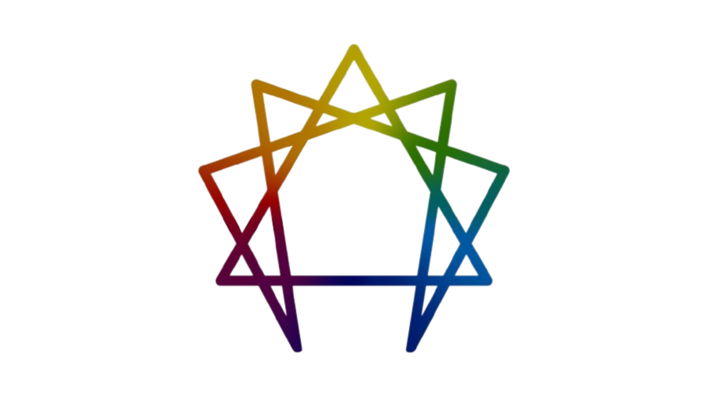

Enneagram Introduction
Discover your personality type.

Individuals, professionals, and spiritual searchers all around the globe have embraced the Enneagram as a powerful method for self-discovery and personal improvement. It provides profound insights into human psychology and behavior, allowing us to better understand ourselves and others. In this introduction, we'll look at the Enneagram's history, purpose, and relevance, as well as why learning your Enneagram type may be a life-changing experience.
The Enneagram has its origins in ancient wisdom traditions, but its present form arose in the twentieth century as a result of the work of numerous researchers, notably Oscar Ichazo and Claudio Naranjo. This dynamic system outlines nine different personality types, each with its own set of underlying motives, anxieties, wants, and thinking, feeling, and acting patterns. It goes beyond labels and invites us to investigate the fundamental mechanisms that affect our lives.
The Enneagram's main goal is not to pigeonhole or label people, but rather to promote self-awareness and personal progress. We acquire significant insights into our unconscious habits and habitual responses by knowing our Enneagram type. It sheds light on both our strengths and opportunities for possible improvement by illuminating the basic fears and wants that drive our behaviors. We may go on a revolutionary path of self-discovery, self-acceptance, and self-transcendence as a result of this insight.
Discovering your Enneagram type is an invitation to begin on a journey of personal development and comprehension. It offers a road map for self-reflection as well as practical methods for navigating relationships, controlling stress, and realizing our full potential. We build empathy, compassion, and successful communication by learning more about our own motivations and the motives of others. The Enneagram is a powerful personal development tool that promotes increased self-awareness, emotional intelligence, and meaningful relationships with those around us.
So, study the Enneagram and begin on a profound path of self-discovery. Discover the patterns that create your life, appreciate your talents, and work compassionately with your areas for development. Understanding your Enneagram type may help you live a more real, satisfying, and harmonious existence.
Enneagram Insights
The Album: Enneagram by Sleeping At Last
"Enneagram" is a remarkable musical project by Sleeping At Last that delves deep into the intricate layers of the Enneagram personality types. This album is a beautiful exploration of the Enneagram system, with each song dedicated to a specific type. The emotional depth and lyrical brilliance of the album make it a captivating journey for both Enneagram enthusiasts and music lovers alike.
Type 1: The Perfectionist

The song for Type 1, titled "Perfection", resonates with the pursuit of excellence and the internal struggle for perfection. The uplifting melodies and introspective lyrics beautifully capture the essence of Type 1's drive for self-improvement and the desire to make the world a better place. Listen to the song on
Spotify
or
YouTube
Type 2: The Helper

The song for Type 2, titled "Helpless", encapsulates the selfless and caring nature of this personality type. The heartfelt lyrics and soul-stirring melodies evoke a sense of compassion and empathy, reflecting the deep desire of Type 2 individuals to support and uplift others. Experience the song on
Spotify
or
YouTube
Type 3: The Achiever

The song for Type 3, titled "Three", embodies the drive for success and the pursuit of goals. The energetic rhythms and motivating lyrics capture the essence of Type 3's ambition and desire to achieve greatness. Listen to the song on
Spotify
or
YouTube
Type 4: The Individualist

The song for Type 4, titled "Four", delves into the realm of emotions and self-discovery. The soulful melodies and poetic lyrics beautifully express the depth of Type 4's emotions and their journey to find their unique identity. Experience the song on
Spotify
or
YouTube
Type 5: The Investigator

The song for Type 5, titled "Five", delves into the world of knowledge and contemplation. The intriguing melodies and insightful lyrics mirror the thoughtful and inquisitive nature of Type 5 individuals as they seek to understand the world around them. Listen to the song on
Spotify
or
YouTube
Type 6: The Loyalist

The song for Type 6, titled "Six", captures the essence of loyalty and the quest for security. The reassuring melodies and heartfelt lyrics mirror the loyal and vigilant nature of Type 6 individuals as they navigate life's uncertainties. Experience the song on
Spotify
or
YouTube
Type 7: The Enthusiast

The song for Type 7, titled "Seven", embodies the spirit of adventure and the pursuit of joy. The uplifting rhythms and optimistic lyrics mirror the exuberant and adventurous nature of Type 7 individuals as they seek to experience all that life has to offer. Listen to the song on
Spotify
or
YouTube
Type 8: The Challenger

The song for Type 8, titled "Eight", embodies the essence of power and assertiveness. The bold melodies and empowering lyrics mirror the strong and authoritative nature of Type 8 individuals as they fearlessly take charge of their lives. Experience the song on
Spotify
or
YouTube
Type 9: The Peacemaker

The song for Type 9, titled "Nine", reflects the gentle and harmonious nature of this personality type. The soothing melodies and calming lyrics mirror the peaceful and accepting nature of Type 9 individuals as they seek unity and avoid conflict. Listen to the song on
Spotify
or
YouTube
Relativity to Enneagram Personality Types
The album "Enneagram" by Sleeping At Last offers a profound insight into the intricacies of each Enneagram type. Through poetic lyrics and enchanting melodies, the songs capture the essence of the nine personality types, allowing listeners to embark on a soulful journey of self-discovery and self-reflection. Whether you resonate with the Perfectionist's pursuit of excellence or the Peacemaker's quest for harmony, this album serves as a poignant reminder of the beauty and complexity inherent in each personality type.
Sleeping At Last's heartfelt exploration of the Enneagram system serves as a testament to the power of music in illuminating the depths of human nature. The carefully crafted songs not only provide a glimpse into the motivations, fears, and desires of each type but also foster empathy and understanding among listeners. It is a musical masterpiece that invites introspection, encourages personal growth, and celebrates the uniqueness of every Enneagram type.
Whether you are a seasoned Enneagram enthusiast or just beginning your journey of self-discovery, the album "Enneagram" by Sleeping At Last offers a captivating and transformative experience. Immerse yourself in the enchanting melodies, thoughtful lyrics, and evocative storytelling that will awaken your curiosity, stir your emotions, and deepen your understanding of the rich tapestry of human personality.
Profile
Here are the developers who managed this Enneagram Website.
Glexis Tiamson
"To know and love ourselves and others well
Is the most difficult and meaningful
Work we’ll ever do"
Enneagram Type: 9 - The Peacemaker
James Petilla
"Ako lang ang may girlfriend saming apat"
Enneagram Type: 2 - The Helper
Jason Villacampa
Name: Jason Villacampa
Enneagram Type: 7 - The Enthusiast
Irah Rosales
Name: Irah Rosales
Enneagram Type: 9 - The Peacemaker
Location: XYZ
Phone: +00 123456
Email: info@enneagram.com
Learn more about the Enneagram and its applications: